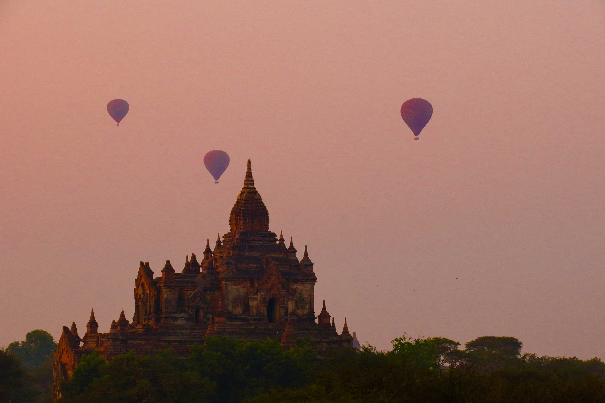

First time I heard about this country was for too long time ago when the country were not open for any tourist. After I have read several blogpost
from those who have been there I decided to give it a try, a country that have been newly opened for tourism. It was early in 2018 when I was there, and still have
some good memories about that country. The country itself is rich of culture and history, especially about Buddhism. Old ruins and temples could also been
found everywhere across the country.
People still wearing the traditional skirt look a like and chewing tobacco were to find everywhere. The country is still new for tourist and infrastructure
for tourist is a bit limited. I'm finding the people of the country is super nice and friendly, warm smiles were found everywhere. The food wasn't that great compared
to the neighbours country, but still similar. Will probably going back there again some day and explore more of this country.
Home